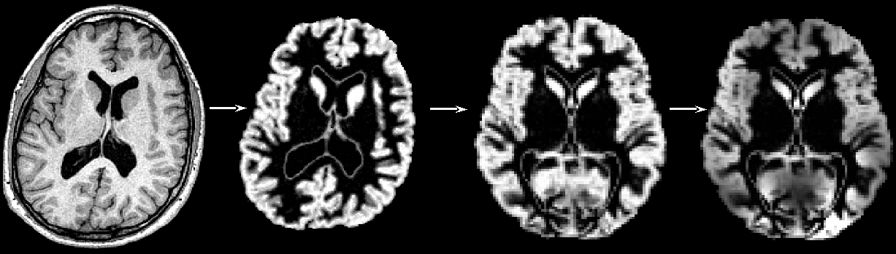
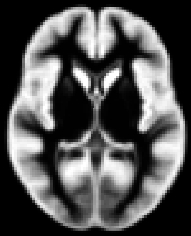
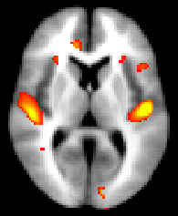

Introduction - Why FSL-VBM?
You might want to investigate voxel-wise changes in the grey matter
volume/topography in one population related to (e.g.) one clinical
score, or between several populations. Or you might be carrying out a
functional study (fMRI, PET) and want to test whether the effect seen
in this study is possibly caused by structural GM differences.
This approach is unbiased, in that it requires no a priori
information about the location of these possible differences in the
grey matter, and is not operator-dependant. It follows the optimised
VBM protocol developed by Good et al., 2001.
To be able to compare all the GM images on a voxelwise basis, they
need to be transformed into a standard space, which involves the use
of non-linear registration. This approach is somewhat of a trade-off:
in order to be able to compare voxel-by-voxel the GM volume in your
images, you want all the structures across your subjects to match
(that's why you use a non-linear registration), but not "too much" or
you would not be able to see any difference, if all these structures
were perfectly aligned across the subjects (that's why you use limited
degrees-of-freedom for the non-linear registration).
Please bear in mind that the interpretation of the results you may
obtain with such voxel-wise analysis has inherent limitations,
however. It is sometimes not possible to determine if the results you
may find are the consequence of an effective reduced thickness or
atrophy in the grey matter, or rather an indirect reflection of a
different gyrification pattern. Indeed, it might be possible that a
misalignment of the gyri/sulci or even different folding patterns may
lead to the difference of grey matter distribution that you have
found. Moreover, there is theoretically a continuum of results
dependent on the degrees of freedom of the non-rigid registration used
(here free-form deformation with 20 mm initial control point spacing)
and the amount of smoothing.
For more detailed information:
- On the VBM protocol:
see Ashburner et al., Voxel-based morphometry-the methods. Neuroimage 2000.
see Good et al., A voxel-based morphometric study of ageing in 465 normal adult human brains. Neuroimage 2001.
On the non-linear registration used in the FSL-VBM protocol:
see Rueckert et al., Nonrigid registration using free-form deformations: application to breast MR images. IEEE TMI 1999.
On the issues of such voxel-wise analyses:
see Bookstein,"Voxel-based morphometry" should not be used with imperfectly registered images. Neuroimage 2001.
see Ashburner et al., Why voxel-based morphometry should be used. Neuroimage 2001.
see Crum et al., Zen and the art of medical image registration: correspondence, homology, and quality. Neuroimage 2003.
see Jones et al., The effect of filter size on VBM analyses of DT-MRI data. Neuroimage 2005.
On one example clinical application of this approach:
see Douaud et al., Anatomically related grey and white matter abnormalities in adolescent-onset schizophrenia. Brain 2007.
Referencing FSL-VBM
If you use this tool in your research, you may want to incude the
following methods description, and please reference the papers
listed below:
Structural data was analysed with FSL-VBM, a voxel-based morphometry
style analysis [Ashburner 2000, Good 2001] carried out with FSL tools
[Smith 2004]. First, structural images were brain-extracted using BET
[Smith 2002]. Next, tissue-type segmentation was carried out using
FAST [Zhang 2001]. The resulting grey-matter partial volume images
were then aligned to MNI152 standard space using the affine (or nonlinear, depending on your choice)
registration of the IRTK [Rueckert 1999, www.doc.ic.ac.uk/~dr/software]. The
resulting images were averaged to create a study-specific template, to
which the native grey matter images were then non-linearly re-registered. The registered
partial volume images were then modulated (to correct for local
expansion or contraction) by dividing by the Jacobian of the warp
field. The modulated segmentated images were then smoothed with an isotropic Gaussian kernel with a sigma of ?? mm. Finally, voxelwise
GLM was applied using permutation-based non-parametric testing, forming clusters at t > ? and testing clusters
for significance at p < 0.05, corrected for multiple comparisons across space.

[Ashburner 2000] Ashburner, J., Friston, K.
Voxel-based morphometry - The methods.
NeuroImage11, 805-821, 2000.
[Good 2001] Good, C., Johnsrude, I., Ashburner, J., Henson, R., Friston, K., Frackowiak, R.
A voxel-based morphometric study of ageing in 465 normal adult human brains.
NeuroImage14(1), 21-36, 2001.
[Rueckert 1999] D. Rueckert, L. I. Sonoda, C. Hayes, D. L. G. Hill, M. O. Leach, and D. J. Hawkes.
Non-rigid registration using free-form deformations: Application to breast MR images.
IEEE Transactions on Medical Imaging, 18(8):712-721, 1999.
[Smith 2002] S.M. Smith.
Fast robust automated brain extraction.
Human Brain Mapping, 17(3):143-155, November 2002.
[Smith 2004] S.M. Smith, M. Jenkinson, M.W. Woolrich, C.F. Beckmann, T.E.J. Behrens, H. Johansen-Berg, P.R. Bannister, M. De Luca, I. Drobnjak, D.E. Flitney, R. Niazy, J. Saunders, J. Vickers, Y. Zhang, N. De Stefano, J.M. Brady, and P.M. Matthews.
Advances in functional and structural MR image analysis and implementation as FSL.
NeuroImage, 23(S1):208-219, 2004.
[Zhang 2001] Y. Zhang, M. Brady, and S. Smith.
Segmentation of brain MR images through a hidden Markov random field model and the expectation maximization algorithm.
IEEE Trans. on Medical Imaging, 20(1):45-57, 2001.
Running FSL-VBM - Overview
Running FSL-VBM involves a few simple commands:
- tbss_1_preproc - prepare your T1-weighted images in the right format
- fslvbm_1_bet - carry out brain extraction on all T1 images
- fslvbm_2_template - create the study-specific symmetric GM template
- fslvbm_3_proc - register all the GM inages to the template, modulate and smooth them with different kernel sizes and finally runs an initial GLM analysis for qualitative evaluation
- randomise - carry out voxelwise GLM analysis using permutation testing
Running FSL-VBM - In detail
A - Prepare your data for the FSL-VBM study
a) Place all your T1-weighted data in your FSL-VBM directory.
For instance:
mkdir my_fsl_vbm
Then copy into your FSL-VBM directory all of your subjects' T1 images, giving each subject's T1 image a different name, preferably with each prefix corresponding to each of your group, for example:
CON_2304.nii.gz
CON_2878.nii.gz
CON_3456.nii.gz
CON_4133.nii.gz
CON_4690.nii.gz
PAT_2042.nii.gz
PAT_2280.nii.gz
PAT_2632.nii.gz
PAT_3193.nii.gz
PAT_4134.nii.gz
PAT_5357.nii.gz
PAT_6659.nii.gz
b) If you have more than one group and the number of subjects in
each is not the same, choose (at random) among the biggest group(s)
the images that you will use to create the study-specific template,
with the same number as of the smallest group (in order to create an
unbiased template - see below for further explanation). Once you've
chosen which T1 images to keep to build the template, put all the
selected names of exams in a file called template_list
in your FSL-VBM directory.
All your different populations included in this study MUST be represented in the template construction.
For instance, as we have only 5 controls for 7 patients, we have to select 5 patients out of the 7:
for g in CON_2304.nii.gz CON_2878.nii.gz CON_3456.nii.gz CON_4133.nii.gz CON_4690.nii.gz \
PAT_2042.nii.gz PAT_2632.nii.gz PAT_3193.nii.gz PAT_4134.nii.gz PAT_6659.nii.gz; do
echo $g >> template_list
done
c) It's a good idea to consider your cross-subject statistical
model before you run the FSL-VBM analysis. So you should at
this point create your design.mat and design.con in your FSL-VBM
directory; see the randomise
manual.
WARNING!!! The order of the rows in your design.mat model
MUST match the order of your images when doing an 'ls' command in your
FSL-VBM directory.
B - Changing the format: tbss_1_preproc
You need to scale the values in your T1 images to be between 0 and 10,000 and convert the format to uncompressed Analyze with positive voxel dimensions (because the nonlinear registration software IRTK used in the FSL-VBM protocol requires this format). Thus, you need to know approximately what the values in all your T1 data are. You can check this using fslstats. For example:
fslstats CON_2304.nii.gz -R
0.000000 217.000000
Here the scaling applied should be roughly 40 (217 x 40 = 8680).
Now run the tbss_1_preproc script, from inside your FSL-VBM directory, for instance, assuming that the range of values for all the T1 images is the same:
tbss_1_preproc -f 40 *.nii.gz
The script will now scale and convert the data, placing it in a
newly-created sub-directory called FAi. It will also create a
sub-directory called origdata and place all your original images in
there for posterity.
At this point, it is worth CHECKING the images as created in
FAi. For this, you need to open FAi/slicesdir/index.html
in a web browser to see quick views of all images, to verify that they
look reasonable.
C - Extracting brain information: fslvbm_1_bet
The first FSL-VBM script runs brain extraction on the T1
images. You can either use the -b option to get default
BET behaviour, or use the -N option if your images
include a lot of neck (which most of the time confounds the BET
preprocessing).
To run this first step script, just type:
fslvbm_1_bet -b
or
fslvbm_1_bet -N
in your FSL-VBM directory.
At the end of this step, it is once again worth CHECKING the
brain images (*_brain.hdr) in your FAi directory by loading
the new FAi/slicesdir/index.html file. Brain
extraction is the step which is the most likely to need tweaking in
the FSL-VBM protocol. If you do not get good results with either
option, you can try adding other bet
options after the -b or -N option.
D - Creating the template:
fslvbm_2_template
The second step of the FSL-VBM protocol creates the study-specific
GM template.
All brain-extracted images are segmented into GM, WM
and CSF. GM images (*_FAi_GM.hdr) and their respective mirror images
(*_FAi_GM_xflipped.hdr) are then registred to the GM ICBM-152
template. The registered GM images and their mirror images are
concatenated in a 4D Analyze image called "template_GM_4D" and
averaged to create the study-specific GM template of 2x2x2mm3
resolution .
If you have different populations, they should all be represented
in your template. You should use the same number of subjects from each
in the construction of the study-specific template. This is to avoid
any bias during the registration step that would have consisted in
favouring one of the group. For example, if you have only controls in
your template, or more controls than patients, it is likely that the
non-linear registration would be more accurate for your control
subjects than for your patients. Then you cannot distinguish in your
results showing differences in the GM volume distribution between the
two groups what is actually disease-related from what is
registration-related!
For this step, you have two options: either you want to create a
template based on an affine registration (-a option) of GM images to the GM
ICBM-152 template, or on a non-linear registration (-n option).
So to run this second step script, just type:
fslvbm_2_template -a
or
fslvbm_2_template -n
in your FSL-VBM directory.
Once this is completed, CHECK the "template_GM_4D" image in
FAi with the movie loop in fslview.
E - Processing the native GM images: fslvbm_3_proc
The final script will non-linearly register all your GM images to
the study-specific template and concatenate them into a 4D image
("GM_merg") in the stats directory in your working
FSL-VBM directory. The FSL-VBM protocol also introduces a compensation
(or "modulation") for the contraction/enlargement due to the
non-linear component of the transformation: each voxel of each
registered grey matter image is divided by the Jacobian of the warp
field (see Good et al., 2001). All the modulated registered GM images
are concatenated into a 4D image in the stats directory
("GM_mod_merg") and then smoothed ("GM_mod_merg_s2.5" for instance) by
a range of Gaussian kernels; sigma = 2.5, 3, 3.5, 4 mm, so roughly
from FWHM = 2.5 x 2.3 = 5.75 to FWHM = 9 mm.
Finally, this last step gets everything ready for you to run
permutation-based non-parametric inference using the design.mat and
design.con which you supplied, a mask of the GM ("GM_mask")
and the 4D multi-subject concatenated processed data
(e.g. "GM_mod_merg_s2.5"). The script runs randomise with
inference (generations of p-values maps) turned off, so that it very quickly creates just the raw tstat maps. These tstats maps should help you decide which
smoothing is the most relevant to feed into a full run of randomise,
and which threshold to use for the cluster-based correction for
multiple comparisons (option -c in
the randomise command).
WARNING!!! By default fslvbm_3_proc concatenates the images
in alphabetical order (following the prefices you have chosen for
them) so it may not match the order in your design.mat model if you're
not careful.
All of the above is done simply by running the script:
fslvbm_3_proc
in your FSL-VBM directory.
Please do not forget the final CHECK of the 4D image of modulated registered GM images "GM_mod_merg" using the movie loop in fslview.
F - Displaying your FSL-VBM results
We strongly recommend using randomise (permutation
testing) for inference in VBM-style analysis and not Gaussian random
field theory (GRF), as the approximations underlying the latter are
not generally appropriate in such analyses.
Once you have chosen the most appropriate smoothing (e.g. sigma = 3.5 mm) and threshold (e.g. t > 2.3) for the cluster-based correction, then feed them into a full run of
randomise (see randomise usage), for instance:
randomise -i GM_mod_merg_s3.5 -m GM_mask -o myfinalresults -d design.mat -t desing.con -c 2.3 -n 5000 -V
Then you can threshold your "_maxc_" images (corrected p-values maps) at 0.95 to keep only the significant
clusters and use it to mask the corresponding tstats map:
fslmaths myfinalresults_maxc_tstat1 -thr 0.95 -bin mask_pcorrected
fslmaths myfinalresults_tstat1 -mas mask_pcorrected myfinalresults_tstat1_corrected
before displaying it with fslview overlaid on the template_GM or the MNI152 template for example:
fslview /usr/local/fsl/etc/standard/MNI152_T1_2mm_brain.nii.gz -b 100,180 myfinalresults_tstat1_corrected -l Red-Yellow -b 2.3,4
Copyright © 2007, University of
Oxford. Written by Gwenaëlle Douaud and Stephen Smith.